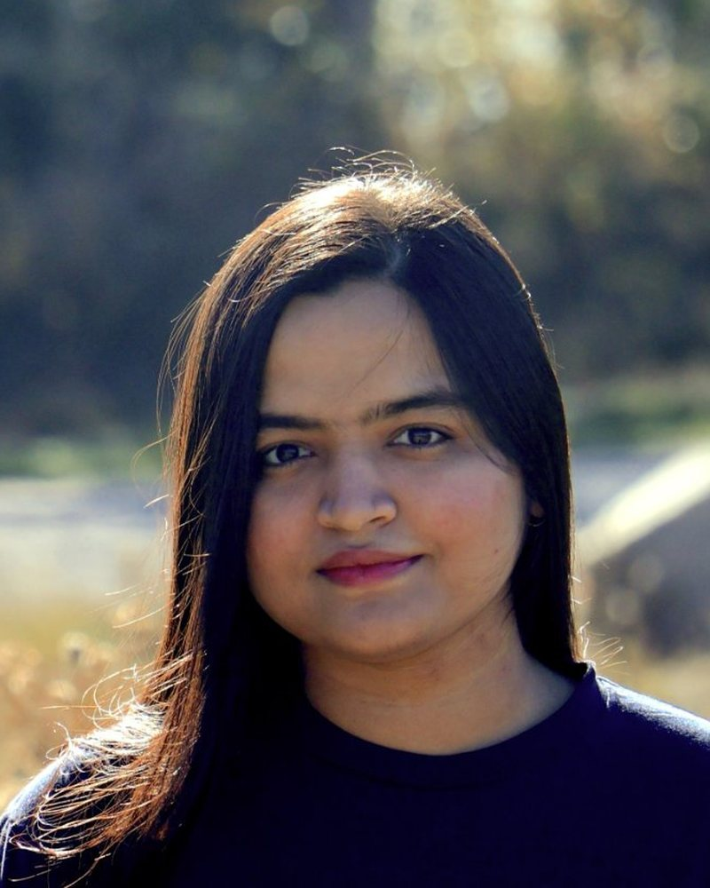

2025 – 2027 (expected April)
M.Sc. in Computer Science, University of New Brunswick
CGPA 4.00 / 4.30. Supervisor: Dr. Saqib Hakak. DTIS Lab, Canadian Institute for Cybersecurity.
I build and evaluate language technology that finds claims worth fact-checking, detects misinformation in text and images, and tests whether large language models serve Bangla and other low-resource languages as well as they serve English.
Applying to PhD programs for Fall 2027. Currently an M.Sc. researcher in Computer Science at the University of New Brunswick, in the DTIS Lab at the Canadian Institute for Cybersecurity, supervised by Dr. Saqib Hakak.

My work sits where natural language processing meets information integrity. Since 2022 I have built systems for the CheckThat! lab at CLEF that decide which tweets and multimodal posts deserve a fact-checker's attention, ranking as high as 3rd across Arabic, Spanish and English tracks. Alongside that, I study Bangla and other low-resource languages: sentiment, violence-inciting text, and how far large language models fall behind when the question is not asked in English.
At UNB I am extending this to cross-domain fake news detection and to the datasets the field relies on, including the new wave of LLM-generated ones. For my PhD I want to keep asking how we can trust what language models and online text tell us, especially for speakers of languages that current systems serve poorly.
Survey on Fake News Datasets: Landscape, Features, and the Rise of LLM-Generated Datasets
Book chapter in Fake News Detection, Mitigation and Prevention: Methods for a Safer, More Secure and Ethical Cyber World, IET
Cross-Domain Challenges in Fake News Detection: A Comparative Study
Book chapter in Fake News Detection, Mitigation and Prevention: Methods for a Safer, More Secure and Ethical Cyber World, IET
arXiv preprint 2410.13153
Do Large Language Models Speak All Languages Equally? A Comparative Study in Low-Resource Settings
arXiv preprint 2408.02237
Z-Index at BLP-2023 Task 2: A Comparative Study on Sentiment Analysis
First Workshop on Bangla Language Processing (BLP-2023) at EMNLP, pp. 324–330
Z-Index at CheckThat!-2023: Unimodal and Multimodal Check-Worthiness Classification
CLEF 2023 Working Notes, pp. 482–493
First Workshop on Bangla Language Processing (BLP-2023) at EMNLP, pp. 225–229
First Workshop on Bangla Language Processing (BLP-2023) at EMNLP
NN at CheckThat!-2023: Subjectivity in News Articles Classification with Transformer-Based Models
CLEF 2023 Working Notes, pp. 318–328
Z-Index at CheckThat! Lab 2022: Check-Worthiness Identification on Tweet Text
CLEF 2022 CheckThat! Lab; arXiv preprint 2207.07308
2025 – 2027 (expected April)
CGPA 4.00 / 4.30. Supervisor: Dr. Saqib Hakak. DTIS Lab, Canadian Institute for Cybersecurity.
2020 – 2024
CGPA 3.98 / 4.00. Thesis: Unimodal and Multimodal Misinformation Identification on Web Data, supervised by Prof. Sheak Rashed Haider Noori.
Sep 2025 – present
Research on misinformation, NLP and cybersecurity: studying the textual and multimodal signals of misinformation with deep learning and transformer models, from literature review and dataset analysis through experimental design and evaluation.
Jan 2026 – present
CS4411/6411 Software Security (Winter 2026) and CS4865/6865 Data Communication and Network Modeling (Fall 2026). Lectures and tutorials, lab and help sessions, grading, exam invigilation and final project vivas.
Feb 2025 – Apr 2025
Designed and delivered security reports for applications.
Jun 2024 – Dec 2024
Ran labs and tutorials for Research and Innovation, Data Mining and Machine Learning, Artificial Intelligence, and System Analysis and Design; collaborated with faculty on research.
Feb 2021 – Jul 2021
Selected and prepared Bengali text data across handwritten, letterpress and typewritten sources.
2026 – present
Student communications, event planning and outreach.
2021
Organizing team for the National Girls' Programming Contest 2021; led its opening and closing ceremonies. Anchored the IJCACI 2020 conference ceremony.
I'm looking for PhD supervisors working on misinformation, multilingual NLP or the evaluation of language models. If that's you, I'd be glad to hear from you.